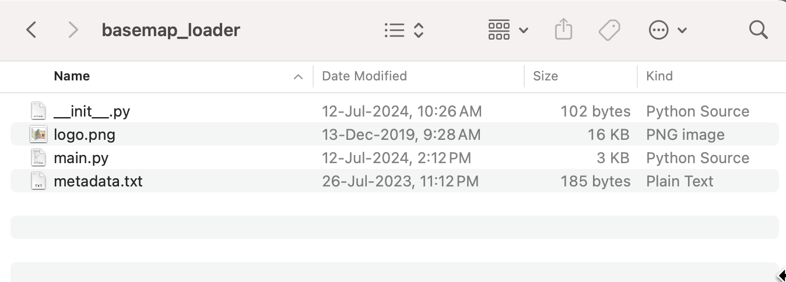
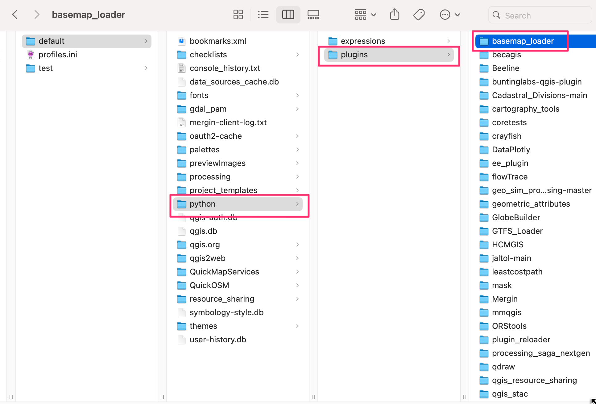
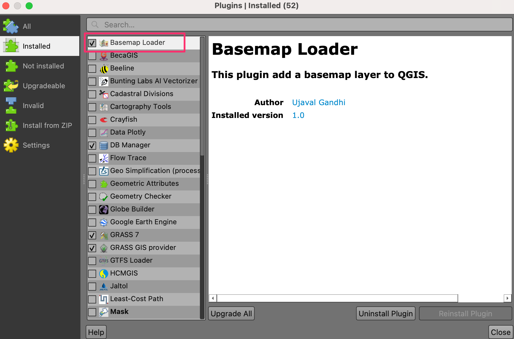
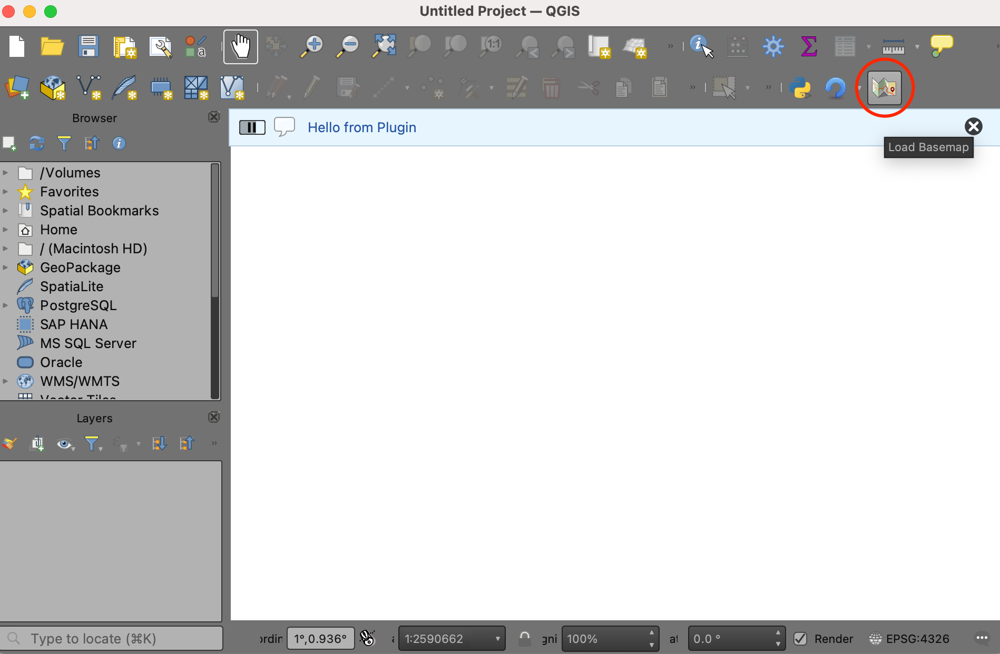
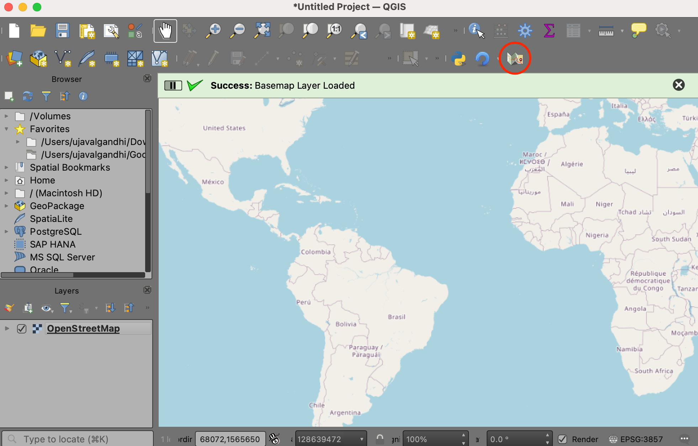

Building Your First QGIS Plugin (Full workshop)
Learn the basics of the QGIS plugin architecture and create your first functional plugin.
Ujaval Gandhi

Introduction
This workshop is designed to help you take your first steps in building QGIS plugins. We will understand the QGIS plugin architecture and see how you can package your code and distribute it as a plugin.

Installation and Setting up the Environment
Install QGIS
This workshop requires QGIS LTR version 3.34. Please review QGIS-LTR Installation Guide for step-by-step instructions.
Get a Text Editor
Any kind of software development requires a good text editor. If you already have a favorite text editor or an IDE (Integrated Development Environment), you may use it for this workshop. Otherwise, each platform offers a wide variety of free or paid options for text editors. Choose the one that fits your needs.
Below are my recommendations editors that are simple to use for beginners.
- Windows: Notepad++ is a good
free editor for windows. Download and install the Notepad++ editor. Tip:
Before writing Python code in Notepad+++, make sure to go to Settings →
Preferences → Language and enable
Replace by space. Python is very sensitive about whitespace and this setting will ensure tabs and spaces are treated properly. - Mac: TextMate is an open-source editor for Mac that is currently available for free.
Building a Plugin
The workshop will teach you how to build a plugin named Basemap Loader that adds a toolbar to QGIS allowing you to pick and easily load your favorite basemaps.
The Basemap Loader Plugin
1. Create a Minimal Plugin
We will now build a simple plugin named Basemap Loader that adds a button in the Plugin Toolbar that loads a basemap from OpenStreetMap to the current project. To understand the required structure, let’s see what a minimal plugin looks like. You can learn more about this structure at QGIS Minimalist Plugin Skeleton.
- The first requirement for plugins is a file called
metadata.txt. This file contains general info, version, name and some other metadata used by plugins website and plugin manager.
metadata.txt
[general]
name=Basemap Loader
description=This plugin adds a basemap layer to QGIS.
version=1.0
qgisMinimumVersion=3.0
author=Ujaval Gandhi
email=ujaval@spatialthoughts.com
icon=logo.png- Second is the file that contains the main logic of the plugin. It
must have
__init__()method that gives the plugin access to the QGIS Interface (iface). TheinitGui()method is called when the plugin is loaded andunload()method which is called when the plugin is unloaded. For now, we are creating a minimal plugin that just add a button and a menu entry that displays message when clicked.
main.py
import os
import inspect
from PyQt5.QtWidgets import QAction
from PyQt5.QtGui import QIcon
cmd_folder = os.path.split(inspect.getfile(inspect.currentframe()))[0]
class BasemapLoaderPlugin:
def __init__(self, iface):
self.iface = iface
def initGui(self):
icon = os.path.join(os.path.join(cmd_folder, 'logo.png'))
self.action = QAction(QIcon(icon), 'Load Basemap', self.iface.mainWindow())
self.iface.addToolBarIcon(self.action)
self.action.triggered.connect(self.run)
def unload(self):
self.iface.removeToolBarIcon(self.action)
del self.action
def run(self):
self.iface.messageBar().pushMessage('Hello from Plugin')- Third file is called
__init__.pywhich is the starting point of the plugin. It imports the plugin class created in the second file and creates an instance of it.
__init__.py
- Create these 3 files and put them in a folder named
basemap_loader. Download the logo.png file and copy to this folder.
{kind=link}

- Next we need to copy the folder to the appropriate directory so QGIS loads it at startup. Open your profile folder by going to Settings → User Profiles → Open Active Profile Folder

- Locate the python plugins directory at
{profile folder}/python/plugins. Copy the entire folder to this directory.

- Restart QGIS. Go to Plugins → Manage and Install plugins… → Installed and enable the Basemap Loader plugin.

- You will the toolbar icon from the plugin. Click on the button and the Hello from Plugin message is displayed.

2. Add Core Functionality
Now let’s build on the basic plugin structure and add the functionality to load a XYZ Tile Layer when the button is clicked. We will be using the OpenStreetMap Standard XYZ layer. The PyQGIS code to load a XYZ tile layer is adapted from the PyQGIS Cookbook.
- Modify the
main.pyfile with the content from below.
main.py
import os
import inspect
from PyQt5.QtWidgets import QAction
from PyQt5.QtGui import QIcon
from qgis.core import QgsRasterLayer, QgsProject, QgsCoordinateReferenceSystem
cmd_folder = os.path.split(inspect.getfile(inspect.currentframe()))[0]
class BasemapLoaderPlugin:
def __init__(self, iface):
self.iface = iface
def initGui(self):
icon = os.path.join(os.path.join(cmd_folder, 'logo.png'))
self.action = QAction(QIcon(icon), 'Load Basemap', self.iface.mainWindow())
self.iface.addToolBarIcon(self.action)
self.action.triggered.connect(self.run)
def unload(self):
self.iface.removeToolBarIcon(self.action)
del self.action
def run(self):
basemap_url = 'https://tile.openstreetmap.org/{z}/{x}/{y}.png'
zmin = 0
zmax = 19
crs = 'EPSG:3857'
uri = f'type=xyz&url={basemap_url}&zmax={zmax}&zmin={zmin}$crs={crs}'
rlayer = QgsRasterLayer(uri, 'OpenStreetMap', 'wms')
if rlayer.isValid():
QgsProject.instance().addMapLayer(rlayer)
self.iface.messageBar().pushSuccess('Success', 'Basemap Layer Loaded')
else:
self.iface.messageBar().pushCritical('Error', 'Invalid Basemap Layer')- To see the result of our changes, we must restart QGIS. This can be quite tedious while developing plugins, so there is a handy plugin named Plugin Reloader that can reload a selected plugin without having to restart QGIS. Go to Plugins → Manage and Install plugins… → All and search for the plugin named Plugin Reloader. Click Install Plugin. Once the plugin is installed, locate the Configure button from the Plugin Toolbar and select the Basemap Loader plugin. Click Reload to reload the plugin.

- Once reloaded, click the Load Basemap button from the toolbar and you will see the basemap layer loaded in QGIS.

3. Add User Interface
We will now add some user-interface widget to the plugin. Instead of a button that loads a single basemap, we can build a toolbar that has a drop-down menu of many options that the user can pick from and load the basemap.
For a comprehensive list of basemap tile-services and their URLs, you can see the Contextily Providers page.
- Modify the
main.pyfile with the content from below.
main.py
import os
import inspect
from PyQt5.QtWidgets import QAction, QComboBox, QLabel, QPushButton
from PyQt5.QtGui import QIcon
from qgis.core import QgsRasterLayer, QgsProject, QgsCoordinateReferenceSystem
cmd_folder = os.path.split(inspect.getfile(inspect.currentframe()))[0]
# We create a dictionary of all the basemaps and their URLs to be used
osm = 'https://tile.openstreetmap.org/{z}/{x}/{y}.png'
cartodb_darkmatter = 'https://a.basemaps.cartocdn.com/dark_all/{z}/{x}/{y}.png'
cartodb_positron = 'https://a.basemaps.cartocdn.com/light_all/{z}/{x}/{y}.png'
esri_shaded_relief = 'https://server.arcgisonline.com/ArcGIS/rest/services/' \
'World_Street_Map/MapServer/tile/{z}/{y}/{x}'
BASEMAPS = {
'OpenStreetMap': osm,
'CartoDB DarkMatter': cartodb_darkmatter,
'CartoDB Positron': cartodb_positron,
'Esri World Shaded Relief': esri_shaded_relief
}
class BasemapLoaderPlugin:
def __init__(self, iface):
self.iface = iface
def initGui(self):
# Create a Toolbar
self.basemapToolbar = self.iface.addToolBar('Basemap Selector')
# Create an Action with Logo
icon = os.path.join(os.path.join(cmd_folder, 'logo.png'))
self.action = QAction(QIcon(icon), 'Load Basemap', self.basemapToolbar)
# Create a label
self.label = QLabel('Select a basemap', parent=self.basemapToolbar)
# Create a dropdown menu
self.basemapSelector = QComboBox(parent=self.basemapToolbar)
self.basemapSelector.setFixedWidth(150)
# Populate it with names of all the basemaps
for basemap_name in BASEMAPS.keys():
self.basemapSelector.addItem(basemap_name)
# Add all the widgets to the toolbar
self.basemapToolbar.addWidget(self.label)
self.basemapToolbar.addWidget(self.basemapSelector)
self.basemapToolbar.addAction(self.action)
# Connect the run() method to the action
self.action.triggered.connect(self.run)
def unload(self):
del self.basemapToolbar
def run(self):
selected_basemap = self.basemapSelector.currentText()
basemap_url = BASEMAPS[selected_basemap]
zmin = 0
zmax = 19
crs = 'EPSG:3857'
uri = f'type=xyz&url={basemap_url}&zmax={zmax}&zmin={zmin}$crs={crs}'
rlayer = QgsRasterLayer(uri, selected_basemap, 'wms')
if rlayer.isValid():
QgsProject.instance().addMapLayer(rlayer)
self.iface.messageBar().pushSuccess('Success', 'Basemap Layer Loaded')
else:
self.iface.messageBar().pushCritical('Error', 'Invalid Basemap Layer')- Reload the plugin to see the toolbar.

What next?
If you enjoyed this workshop, check out our full course PyQGIS Masterclass which covers the entire PyQGIS API in a structured manner.
License
This workshop material is licensed under a Creative Commons Attribution 4.0 International (CC BY 4.0). You are free to re-use and adapt the material but are required to give appropriate credit to the original author as below:
Building Your First QGIS Plugin Workshop by Ujaval Gandhi www.spatialthoughts.com
© 2024 Spatial Thoughts www.spatialthoughts.com
If you want to report any issues with this page, please comment below.